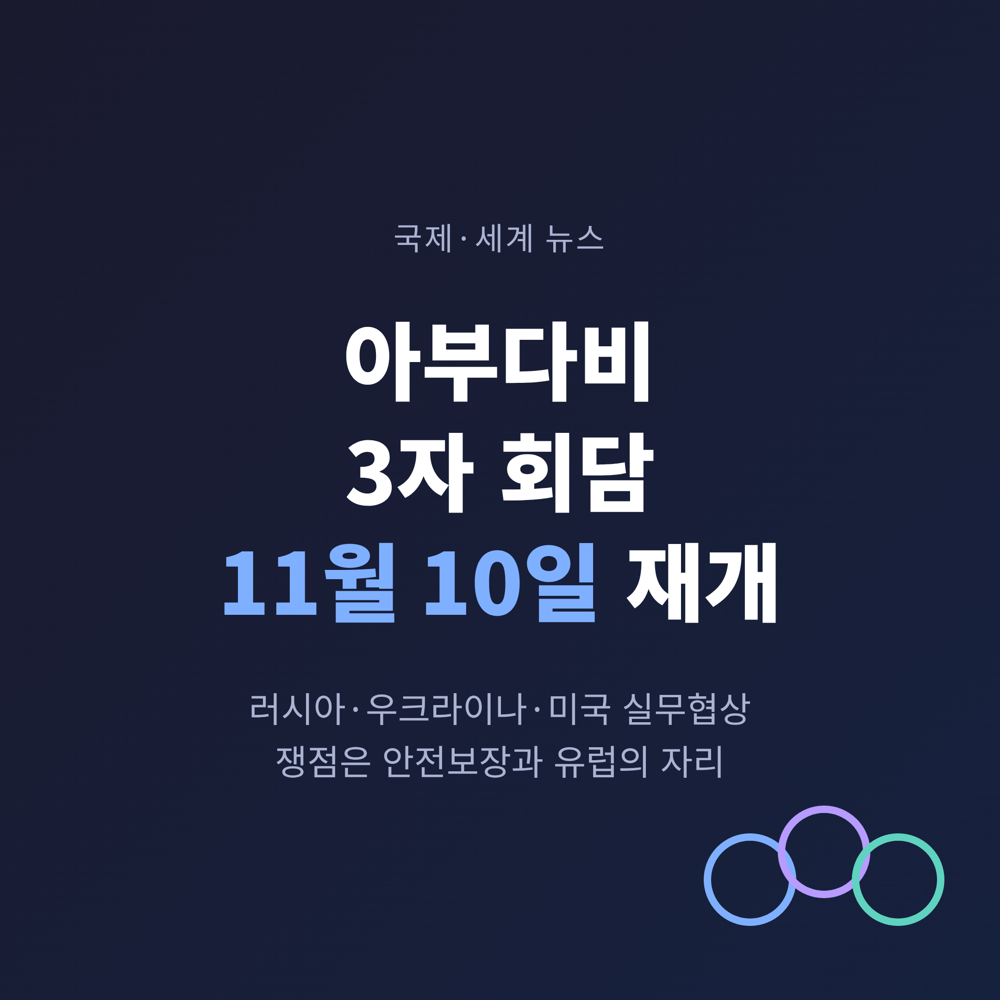
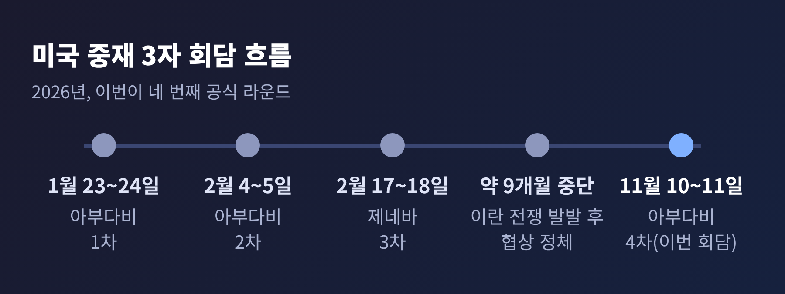
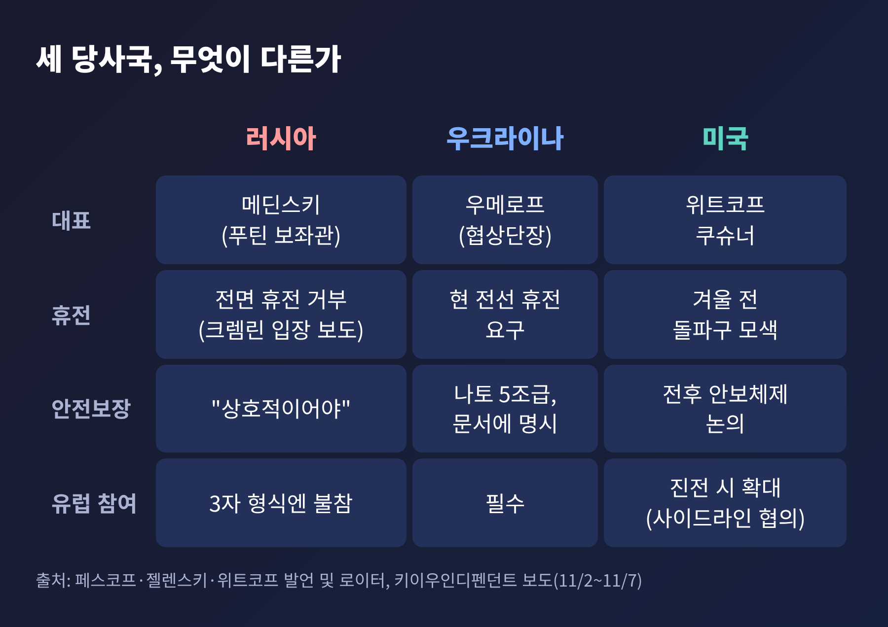
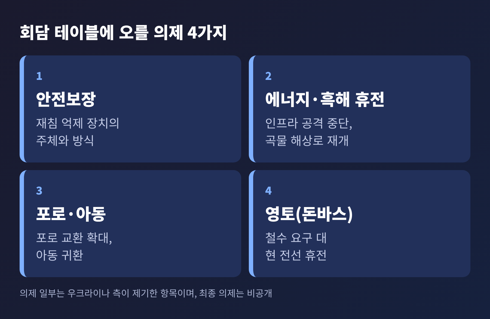
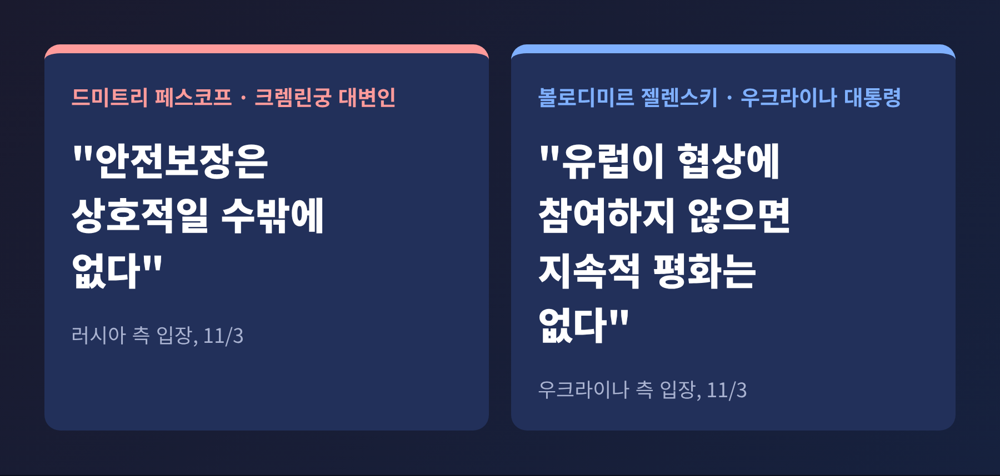
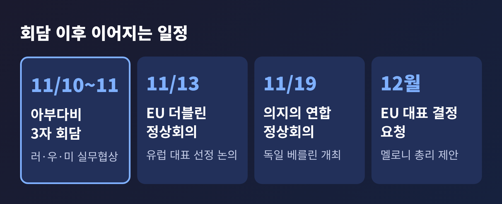

아부다비 3자 회담 11월 10일 재개, 안전보장과 유럽 배제가 쟁점

이번 글에서는 11월 10~11일 아랍에미리트 아부다비에서 열리는 러시아·우크라이나·미국 3자 실무회담을 정리해 보겠습니다. 미국 특사 스티브 위트코프가 11월 2일 발표했고, 크렘린궁이 이튿날 러시아 대표단의 참석을 확인했습니다. 지난 2월 이후 약 9개월 만의 재개이며, 공개된 발언을 보면 이번 협상의 중심은 휴전 자체보다 '안전보장'에 놓여 있습니다.
■ 무슨 일이 열리나: 9개월 만의 실무 협상
위트코프 특사는 11월 2일(현지시간) X를 통해 미국이 아부다비에서 우크라이나와 러시아 간 실무급 협상을 중재한다고 밝혔습니다. 의제로 꼽은 것은 전후 안보 체제, 긴장 완화, 인도적 조치, 종전을 향한 다음 단계입니다. 로이터가 인용한 미국 고위 당국자는 위트코프와 재러드 쿠슈너가 협상에 나설 것이라고 전했습니다.
러시아에서는 드미트리 페스코프 크렘린궁 대변인이 11월 3일 대표단 참석을 확인했습니다. 대표단은 푸틴 대통령 보좌관 블라디미르 메딘스키가 이끕니다. 우크라이나는 루스템 우메로프가 협상단장을 맡는다고 11월 6일 다비드 아라하미야 의원이 확인했습니다. 일부 외신이 키릴로 부다노프 대통령실장이 이끈다고 보도했지만, 우크라이나 측은 부다노프가 대표단에 포함될 뿐 단장은 아니라고 바로잡았습니다.
형식은 정상회담이 아닌 기술 수준의 회담입니다. 페스코프는 세부 내용이 비공개로 논의될 것이라고 말했습니다. 결과가 어떤 방식으로 공개될지는 아직 확인되지 않았습니다.

■ 왜 중요한가: 휴전이 아니라 안전보장의 협상
전쟁이 시작된 뒤 젤렌스키 대통령과 푸틴 대통령은 직접 대화를 한 적이 없습니다. 이번 실무 회담은 그 간격을 메울 첫 단추입니다. 젤렌스키 대통령은 기술 회담이 한두 차례 이어지면 젤렌스키·트럼프·푸틴 3자 정상회담으로 갈 수 있다는 구상을 밝혀 왔습니다.
이번 라운드가 눈에 띄는 이유는 의제의 무게 중심입니다. 지난 1월 회담을 앞두고 페스코프는 "우크라이나군이 돈바스 영토를 떠나야 한다는 입장은 잘 알려져 있다"고 말했습니다. 이번에는 같은 대변인이 "안보 문제와 안전보장 문제를 다룰 것이며, 안전보장은 상호적일 수밖에 없다"고 밝혔습니다. 영토가 앞줄에 있던 자리에 안전보장이 들어선 셈입니다.
다만 이것이 영토 문제의 해소를 뜻하지는 않습니다. 크렘린이 전면 휴전을 거듭 거부하고, 우크라이나가 점령되지 않은 도네츠크·루한스크 지역에서 물러나야 한다고 요구해 왔다는 것이 키이우인디펜던트의 설명입니다. 이번 라운드에서 러시아가 이 요구를 공개적으로 되풀이했는지는 확인되지 않습니다.

■ 쟁점 1. 안전보장: 누구의 보장인가
우크라이나는 전쟁이 끝난 뒤 러시아가 다시 공격하지 못하게 할 장치를 원합니다. 젤렌스키 대통령은 나토 5조에 준하는 보장을 추구하고, 미국의 보장은 의회 표결로 뒷받침되어야 한다고 10월 22일 인터뷰에서 말했습니다. 11월 5일에는 누가, 어떤 수단으로, 언제 대응하는지를 문서에 명시해야 한다고 강조했습니다. 나토 가입, 미국과의 양자 보장, 미국이 뒷받침하는 유럽 주도의 '의지의 연합'을 서로 보완하는 틀로 보고 있습니다.
러시아의 시각은 다릅니다. 페스코프는 안전보장이 상호적이어야 한다고 말했고, 알렉산드르 그루시코 외무차관은 전후 구도에서 우크라이나의 나토 가입 포기와 외국군 주둔 금지가 필요하다는 입장을 밝혔습니다. 우크라이나는 중립과 군 규모 제한을 "논의 대상이 아니다"라고 일축했습니다. 이 그루시코 발언은 키이우포스트 한 곳의 보도라는 점을 밝혀 둡니다.
양쪽이 '안전보장'이라는 같은 단어를 쓰지만, 우크라이나에게는 재침 억제 장치이고 러시아에게는 자국 안보 요구까지 포함하는 틀입니다. 이 간극이 이번 회담의 가장 단단한 벽입니다.
■ 쟁점 2. 영토와 휴전의 범위
우크라이나는 현재 전선에서의 휴전과 법적 구속력이 있는 안전보장을 요구합니다. 동시에 부분 휴전 의제를 준비했습니다. 젤렌스키 대통령이 꼽은 것은 에너지·핵심 인프라 공격 중단, 곡물과 흑해 해상로 재개방, 포로 교환 확대입니다. 포로는 이상적으로는 전원 교환이어야 하지만 우선 교환 방식이라도 찾아야 한다고 말했습니다. 러시아가 데려간 우크라이나 아동의 귀환도 우크라이나가 제기해 온 의제입니다.
예전 회담은 포괄적 합의 없이 포로 교환 진전에 그쳤습니다. 이번에도 가능성이 높은 것은 분야별 합의입니다. 한국의 한 매체는 분야별 공격 중단이 성사되더라도 포괄적 종전이나 영토 문제 해결과 같은 것으로 보기는 어렵다고 짚었습니다. 성패는 적용 범위, 위반 확인 방식, 책임 주체가 얼마나 구체적인가에 달려 있다는 분석입니다.

■ 쟁점 3. 유럽은 어디에 앉는가
아부다비 테이블에는 유럽 대표가 없습니다. 쿠슈너는 유럽 파트너와 "사이드라인에서" 협의하겠다고 했고, 진전이 있으면 유럽이 직접 참여하는 확대 형식이 뒤따를 수 있다고 밝힌 것으로 전해집니다. 러시아 측은 3자 형식에 유럽이 참여하지 않는다는 입장이며, 크렘린은 유럽의 관여가 결국 불가피할 것이라는 취지로도 말한 것으로 파이낸셜뉴스는 전했습니다.
유럽 내부도 정리되지 않았습니다. 조르지아 멜로니 이탈리아 총리는 11월 5일 안토니우 코스타 유럽이사회 의장에게 서한을 보내 EU가 대표를 정하지 않으면 "유럽을 협상 과정에서 무관함으로 내몰 위험이 있다"고 경고했습니다. 코스타 의장은 이 문제를 11월 13일 더블린 정상회의 의제에 올리기로 했습니다. 멜로니 총리는 12월까지 공식 결정을 요청했습니다.
젤렌스키 대통령은 "유럽이 어떤 형태로든 협상에 참여하지 않으면 안정적이고 지속적인 평화는 없다"고 말했습니다. 유럽이 빠진 채 합의가 만들어지면 이행 단계에서 부담과 책임을 둘러싼 이견이 생길 수 있다는 지적도 있습니다. 트럼프 대통령은 11월 5일 러시아 특사 키릴 드미트리예프를 만난 뒤 "큰 합의"가 "유럽 전체를 포함할 수 있다"고 말했으나 구체 내용은 공개하지 않았습니다.

■ 회담장 밖의 변수: 공습과 압박
협상 직전에도 전장은 멈추지 않았습니다. 11월 2일 자포리자주 코미슈바하의 구호·대피 시설이 공습을 받았고, 우크라이나 비상사태청은 11월 7일 사망자를 55명으로 집계했습니다. 젤렌스키 대통령은 사망자가 100명에 가까울 수 있다고 말했습니다. 러시아 국방부는 우크라이나 부대가 있던 3개 정착지를 타격했다고 밝혔고, 양측 주장은 독립적으로 검증되지 않았습니다. 우크라이나 대표단은 이 문제를 미국과 러시아 양측에 제기할 계획입니다.
미국의 태도도 변수입니다. 로이터는 미 당국자가 겨울이 오기 전 돌파구를 찾고 있으며 트럼프 대통령이 최근 우크라이나에 합의를 압박해 왔다고 전했습니다. 반면 마르코 루비오 국무장관은 10월 말 G20 외교장관회의에서 협상 타결이 가능한지 모르겠다고 말했습니다. 낙관과 신중이 한 정부 안에서 엇갈립니다.
■ 전망: 무엇을 지켜보면 되나
성대한 합의가 곧바로 나올 가능성은 낮아 보입니다. 부다노프 실장도 이번 회담이 마지막도, 최종도 아니라며 기대를 낮추려 했습니다. 지난 세 차례도 미국은 대체로 '건설적'이라고 평가했을 뿐 구체적 합의는 없었습니다. 그렇다고 의미가 없다는 뜻은 아닙니다. 지켜볼 지점은 네 가지입니다.
첫째, 에너지·흑해 같은 부분 휴전이 문서로 나오는지입니다. 둘째, 포로 교환과 아동 귀환이 일정과 규모를 갖추는지입니다. 셋째, 안전보장 논의가 다음 라운드와 정상회담으로 이어질 틀을 만드는지입니다. 넷째, 유럽의 참여 형식이 정해지는지입니다. 11월 13일 EU 정상회의와 11월 19일 베를린의 '의지의 연합' 정상회의가 곧바로 이어집니다.

■ 한국에서 지켜볼 점
한국과 직접 연결된 영향을 다룬 신뢰할 만한 보도는 이번 조사에서 확인하지 못했습니다. 그래서 단정하지는 않겠습니다. 다만 유엔·세계은행·EU 등의 공동 평가는 향후 10년간 우크라이나 복구에 약 5,880억 달러가 필요하다고 추산했습니다. 휴전의 범위와 안전보장의 틀이 정해져야 이 재건 논의도 속도를 낼 수 있습니다. 한국 정부와 기업이 어떤 역할을 할지는 협상 결과를 본 뒤 따져 볼 문제입니다.
정리하면 이렇습니다. 이번 회담은 전쟁을 끝내는 자리라기보다, 끝낼 때 필요한 조건이 무엇인지를 세 나라가 처음 같은 탁자에서 확인하는 자리입니다. 결과는 11월 11일 이후에야 윤곽이 드러날 것이고, 그때 공개되는 내용이 어디까지인지도 지켜봐야 합니다.
"합의의 크기보다 합의의 구체성이 성패를 가른다." 이 한 줄이 이번 회담을 읽는 가장 쓸모 있는 기준이라고 생각합니다.
협상이 길어질수록 전장의 피해는 계속 쌓입니다. 그 시간을 줄일 문서가 이틀 안에 나올 수 있을지, 차분히 지켜보시길 권합니다.
※ 이 글은 2026년 11월 7일까지 보도된 내용을 바탕으로 작성했습니다. 회담 일정과 대표단 구성은 달라질 수 있습니다.